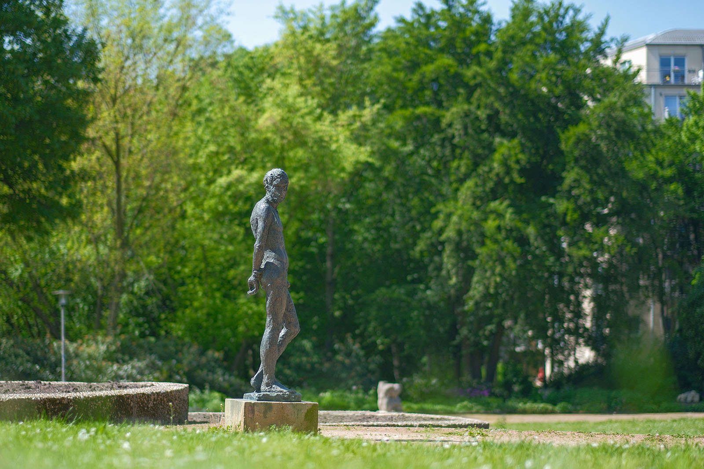
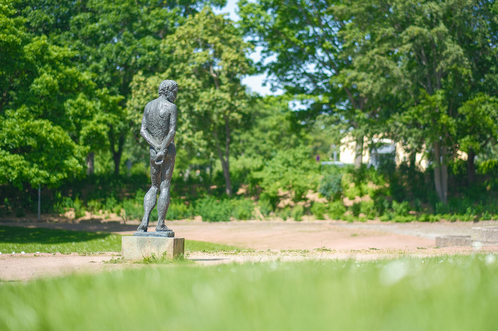
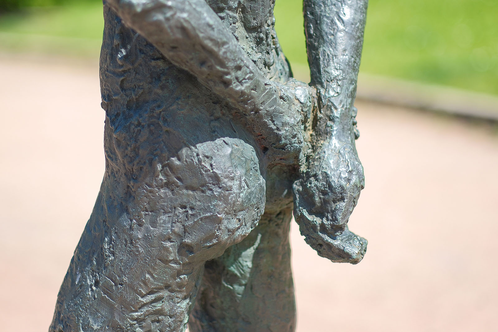
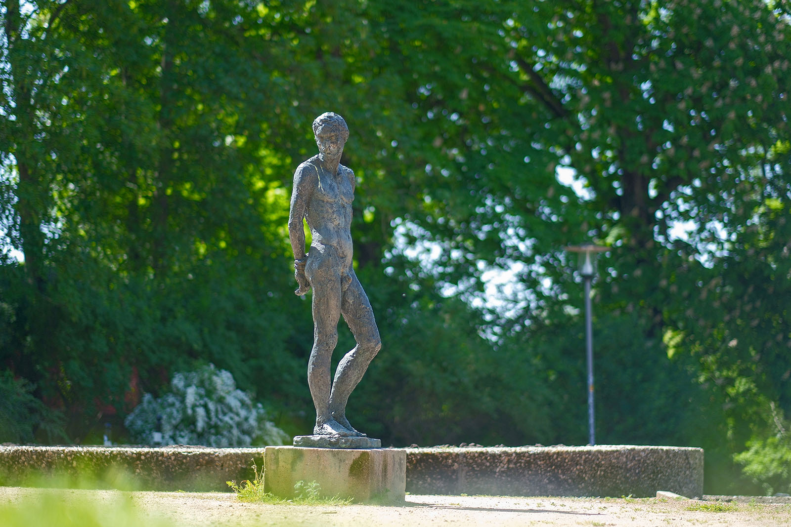

Recherche und Werkbeschreibung: Roman Pilz. Text und Fotografien wechseln sich wie in einem Magazin ab. Ein Klick auf ein Bild öffnet die Großansicht.
Die männliche Aktfigur steht locker und entspannt. Der junge Mann hat die Hände hinter dem Rücken verschränkt und steht mit vorgesetztem Spielbein. Etwa lebensgroß schlendert der Mann frei und ungezwungen durch den Park, der zu DDR-Zeiten als Park der Jugend "V. Festival" angelegt wurde. Ein Sinnbild für Jugend und Schönheit.
Bei dem Mann handelt es sich wohl im Sinne antiker Vorbilder um einen Sportler. Der angedeutete Schnauzer im Gesicht wurde allerdings auch als Bezug zum sowjetischen Gewerkschaftsführer Michail Pawlowitsch Tomski (1880–1936) gedeutet. Die in Berlin tragen die Figuren in der Sammlung der Neuen Nationalgalerie sowie im Bürgerpark Marzahn daher den Beinamen "Tomski".
Sabina Grzimek wurde 1942 in Rom geboren. Grzimek ist das älteste Kind des Bildhauers Waldemar Grzimek und der Malerin und Keramikerin Christa von Carnap. Ihre Eltern ließen sich 1951 scheiden.
Ihre Mutter heiratete 1953 den Bildhauer Fritz Cremer. Von 1961 bis 1962 absolvierte die Sabina Grzimek ein praktisches Jahr an der Porzellanmanufaktur Meißen. Anschließend studierte sie von 1962 bis 1967 bei Heinrich Drake und Arno Mohr Bildhauerei an der Kunsthochschule Berlin-Weißensee.
Nach zwei Jahren als freischaffender Bildhauerin, Malerin und Grafikerin in Berlin-Prenzlauer Berg war sie von 1969 bis 1972 Meisterschülerin an der Akademie der Künste Berlin bei Fritz Cremer. Seit 1972 lebte und arbeitete sie als freischaffende Künstlerin in Erkner bei Berlin. Ab 1997 war die Bildhauerein auch als Gastdozentin an der privaten Höheren Berufsfachschule Grafik-Design-Schule Anklam tätig.
Die Künstlerin schuf eine große Anzahl an Skulpturen aus Bronze, Gips, Terrakotta und Ton, die seit 1971 regelmäßig ausgestellt werden. Bereits früh waren ihre Arbeiten auch in Karl-Marx-Stadt (Chemnitz) zu sehen: 1978 in der Galerie oben, zusammen mit Wolfgang Einmahl, sowie 1981 im Klub "Pablo Neruda". Neben ihrem plastischen Werk fotografiert, malt und zeichnet die Künstlerin.
Zu ihren Auszeichnungen gehören der Gustav-Weidanz-Preis (1972), der Käthe-Kollwitz-Preis (1983), der Preis des Kunstfördervereins Weinheim (1994) und der Ernst-Rietschel-Kunstpreis der Stadt Pulsnitz (1996). 2011 wurde Sabina Grzimek der Brandenburgische Kunstpreis verliehen. Zahlreiche ihrer wichtigesten Arbeiten sind im öffentlichen Raum von Berlin aufgestellt.
Weitere Hauptwerke sind in Magedeburg, Erkner und in Weinheim so sehen. In Chemnitz sind drei ihrer Bronzen öffentlich zu besichtigen: im Park er Ofper des Faschismus, im Schloßbergpark sowie in Helbersdorf nahe der Salvador-Allende-Straße.
Ein ganzes Leben geben
„Stehender männlicher Akt“ von Sabina Grzimek auf dem Schloßberg (1981)
Es handelt sich um ein bedeutendes Standbild aus dem frühen Schaffen der Berliner Bildhauerin Sabina Grzimek. Die Bronze ist zwar realistisch in Haltung und Proportionen konzipiert, gleichzeitig aber sichtbar von den Spuren künstlerischer Bearbeitung charakterisiert. Die Oberfläche des dunkel patinierten Metalls wirkt rau und lebendig - ganz im Gegensatz zur kontemplativen Pose.
Sabina Grzimek wurde 1942 in Rom geboren. Grzimek ist das älteste Kind des Bildhauers Waldemar Grzimek und der Malerin und Keramikerin Christa von Carnap. Ihre Eltern ließen sich 1951 scheiden.
Ihre Mutter heiratete 1953 den Bildhauer Fritz Cremer. Von 1961 bis 1962 absolvierte die Sabina Grzimek ein praktisches Jahr an der Porzellanmanufaktur Meißen. Anschließend studierte sie von 1962 bis 1967 bei Heinrich Drake und Arno Mohr Bildhauerei an der Kunsthochschule Berlin-Weißensee.

Nach zwei Jahren als freischaffender Bildhauerin, Malerin und Grafikerin in Berlin-Prenzlauer Berg war sie von 1969 bis 1972 Meisterschülerin an der Akademie der Künste Berlin bei Fritz Cremer. Seit 1972 lebte und arbeitete sie als freischaffende Künstlerin in Erkner bei Berlin. Ab 1997 war die Bildhauerein auch als Gastdozentin an der privaten Höheren Berufsfachschule Grafik-Design-Schule Anklam tätig.
Die Künstlerin schuf eine große Anzahl an Skulpturen aus Bronze, Gips, Terrakotta und Ton, die seit 1971 regelmäßig ausgestellt werden. Bereits früh waren ihre Arbeiten auch in Karl-Marx-Stadt (Chemnitz) zu sehen: 1978 in der Galerie oben, zusammen mit Wolfgang Einmahl, sowie 1981 im Klub "Pablo Neruda". Neben ihrem plastischen Werk fotografiert, malt und zeichnet die Künstlerin.
Zu ihren Auszeichnungen gehören der Gustav-Weidanz-Preis (1972), der Käthe-Kollwitz-Preis (1983), der Preis des Kunstfördervereins Weinheim (1994) und der Ernst-Rietschel-Kunstpreis der Stadt Pulsnitz (1996). 2011 wurde Sabina Grzimek der Brandenburgische Kunstpreis verliehen. Zahlreiche ihrer wichtigesten Arbeiten sind im öffentlichen Raum von Berlin aufgestellt.

Weitere Hauptwerke sind in Magedeburg, Erkner und in Weinheim so sehen. In Chemnitz sind drei ihrer Bronzen öffentlich zu besichtigen: im Park er Ofper des Faschismus, im Schloßbergpark sowie in Helbersdorf nahe der Salvador-Allende-Straße.

Ein ganzes Leben geben
„Stehender männlicher Akt“ von Sabina Grzimek auf dem Schloßberg (1981)
